AI for prediction & Earth system modelling
AI for environmental data, Uppsala University
Olof Mogren, RISE Research Institutes of Sweden
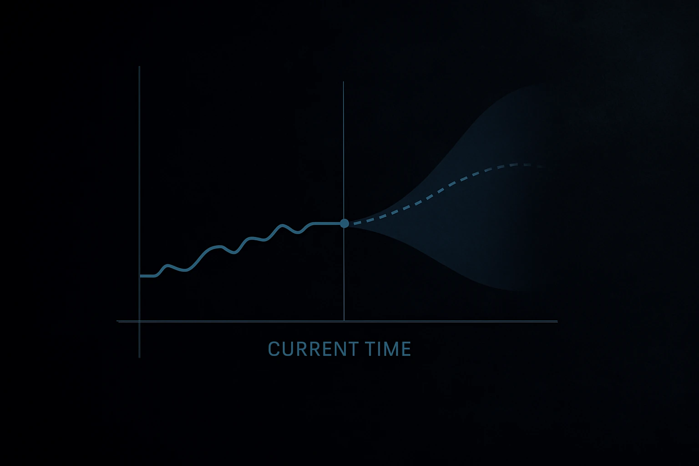
Forecasting using machine learning
- Next word prediction
- Recommendation systems
- Vehicle trajectory estimation
- Energy load forecasting
- Predictive maintenance
- Yield prediction
- Traffic forecasting
- Reinforcement learning: distribution of expected future states
- Wildfire spread
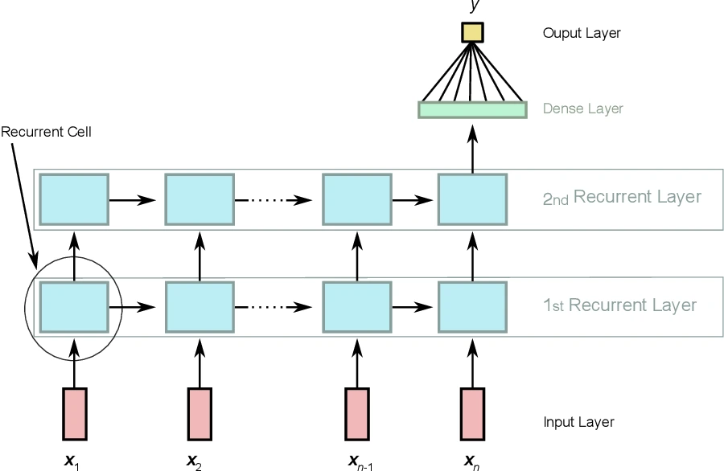
Recurrent neural networks
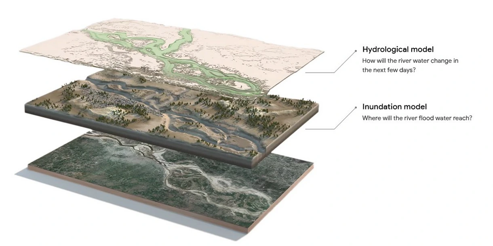
Flood risk: a combination of two models
global weather forecasts, river gauge measurements, satellite imagery
RISE Learning Machines Seminars
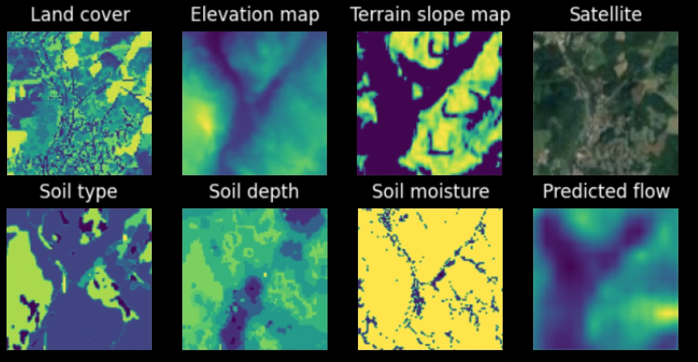
Dense stream flow prediction
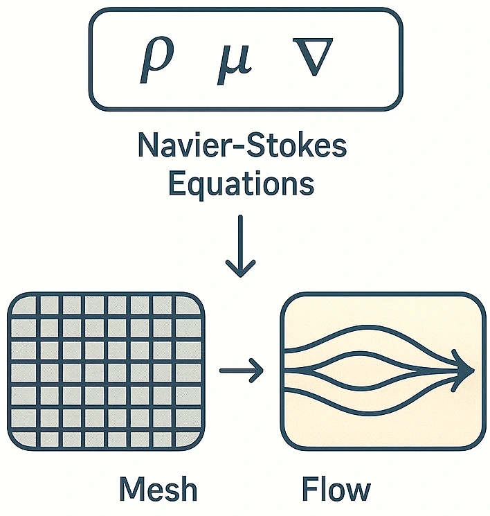
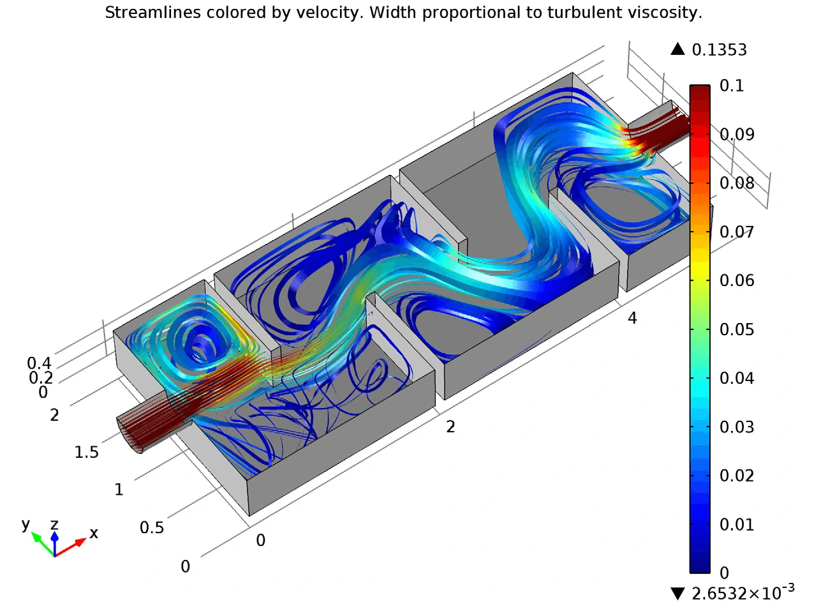
Process-based physical modeling
- Navier-Stokes equations
- Particle-based or mesh-based
- Computationally heavy
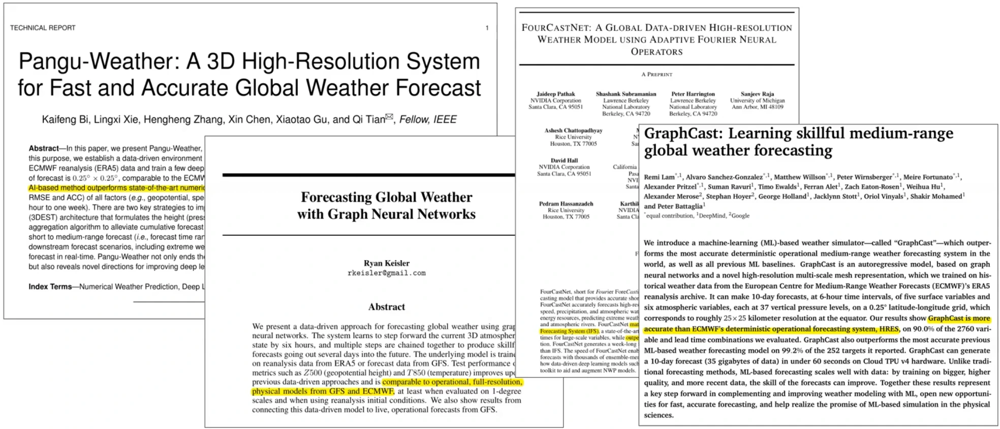
FourCastNet, Pangu-Weather, GraphCast
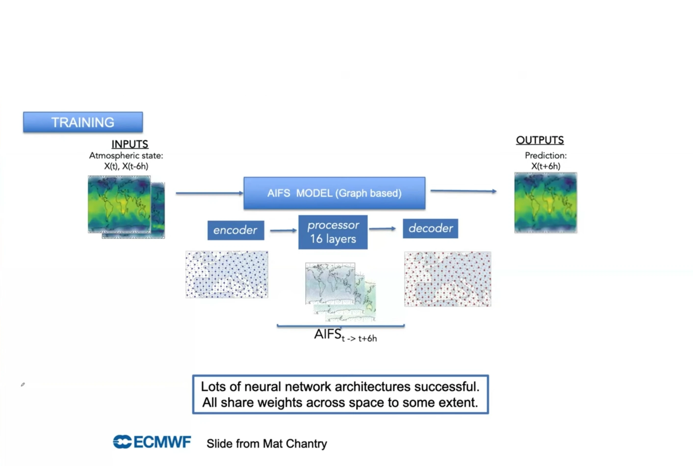
ECMWF AI Forecasting System
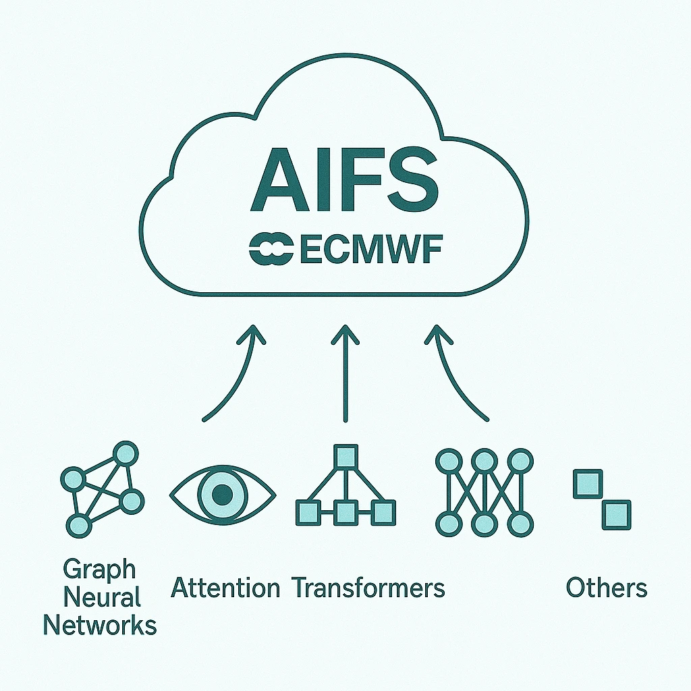
Solutions build on years of progress
- Graph neural networks
- Transformer (attention) architecture
- Diffusion models
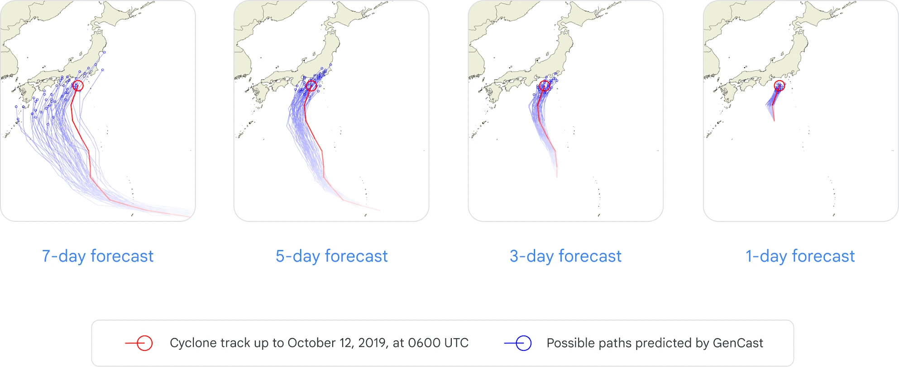
Diffusion models: Gencast
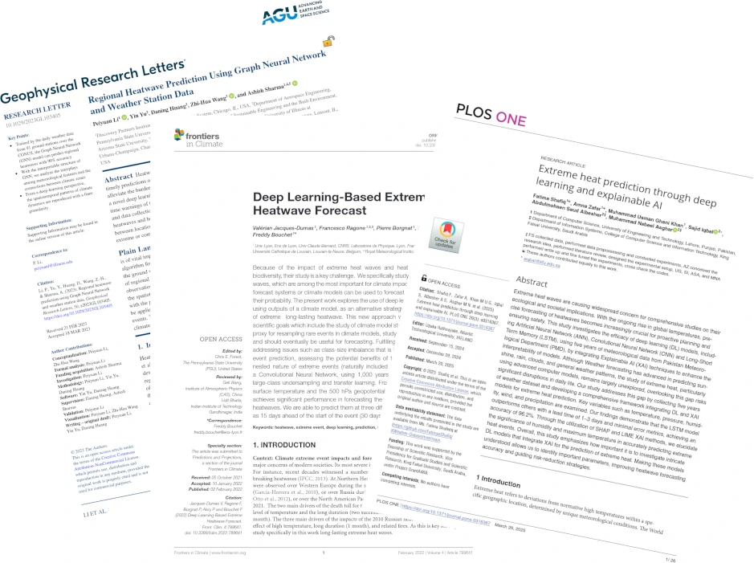
AI for weather extreme estimation